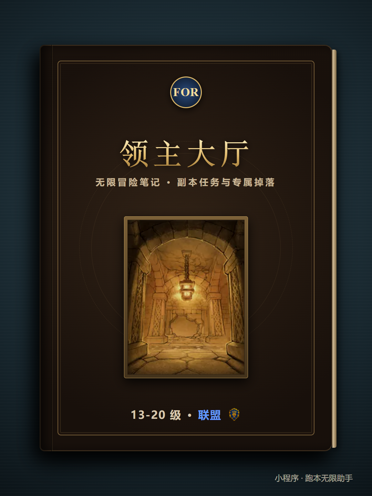
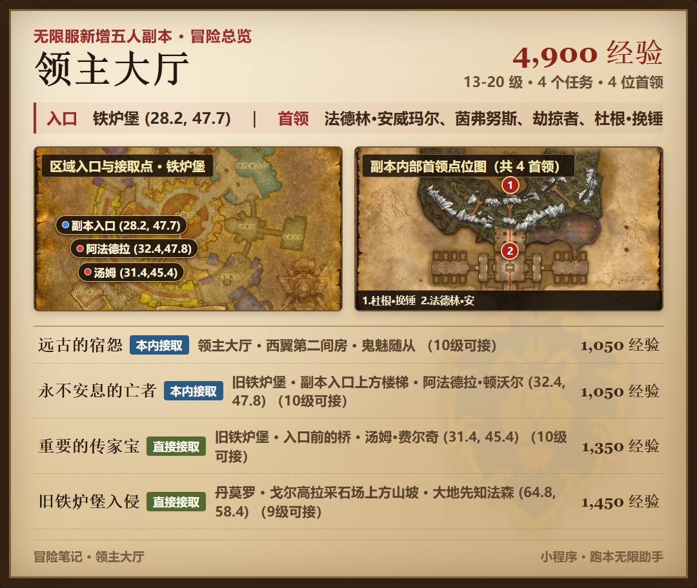
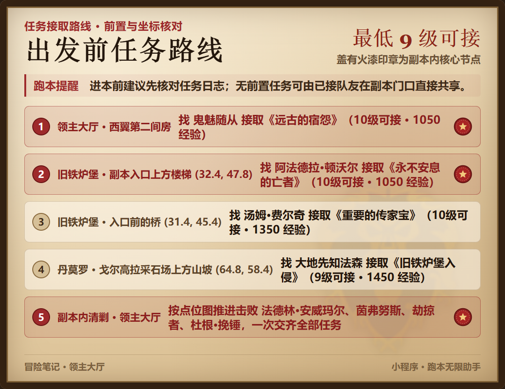
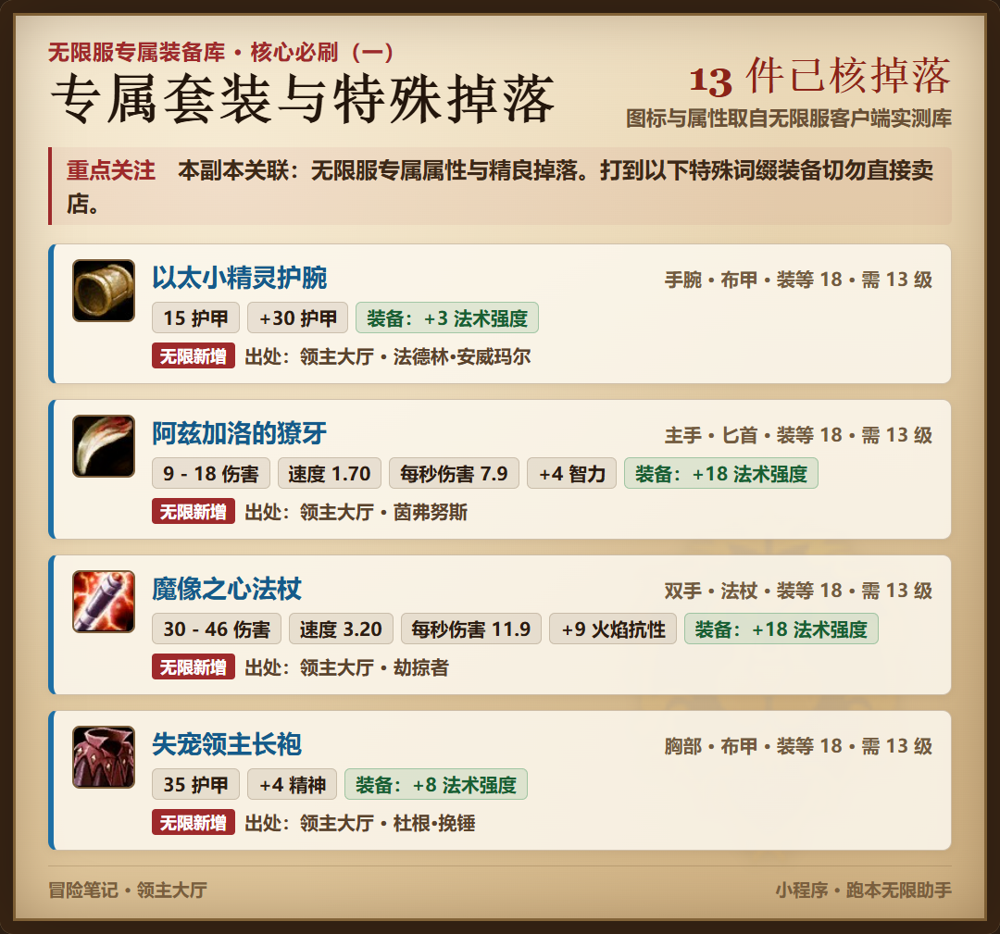
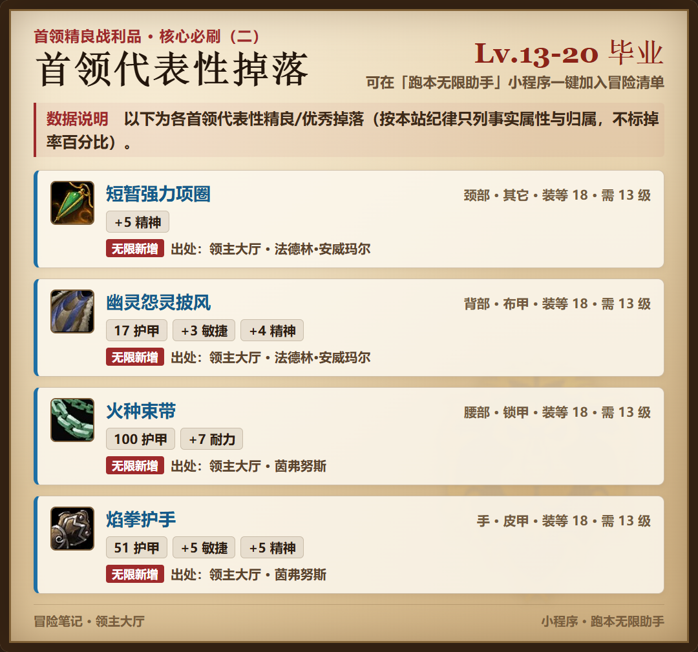
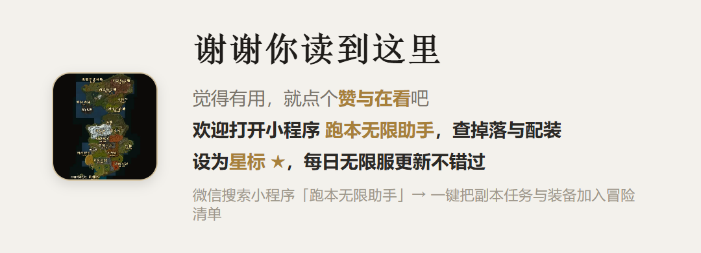

一趟拿满 4,900 任务经验，顺手刷齐无限服新增套装与特殊掉落——出发前先把这份手账翻一遍。
进本之前，先看清这 4 个任务的来处
领主大厅位于丹莫罗，铁炉堡地下（入口坐标 铁炉堡 (28.2, 47.7)），推荐等级 13-20级，副本内共有 4位首领与 4个关联任务。
如果把这 4个任务在进本前全部接齐，一趟下来仅任务结算就能拿到约 4,900点经验，还不含沿途精英怪与首领的额外产出。

接取路线与前置要求：哪些必须提前做？
很多队伍进本后才发现有人接不到共享任务——原因通常是卡在了前置任务链或最低接取等级（9级）。
出发前请对照下方路线图与坐标逐一检查任务日志；盖有红色火漆印章的步骤为进入领主大厅后的核心交付节点。

无限服专属新增套装与特殊掉落
与传统旧世不同，无限服在领主大厅里塞进了多件极具实用价值的专属套装与特殊词缀装备（含 无限服专属属性与精良掉落）。
下面这些装备的图标、护甲与绿字特效均已由本站从无限服客户端与实测库逐条核对，刷到后千万别顺手卖了商店。

首领核心战利品与跑本常见问题
除了特殊功能装，领主大厅各首领还出产多件 13-20级 阶段极其扎实的过渡蓝绿装。你可以打开「跑本无限助手」小程序，把目标装备一键加进自己的冒险清单。

接齐任务再进门，
认准坐标不迷路，
特殊掉落留好包，
下一座副本我们接着记。
注：本指南任务坐标、首领点位及物品属性均核自本站无限服数据库（dungeons.json / dungeon-quests.json / items-detail.json），按本站规则不标注掉率百分比。
资料与数据核对来源
本站无限服真源数据库（wow-forever-web/app/data/）
DungeonsForever 2.1.109 / QuestieDB 1.1.2 / ForeverLevelingBiS 套装表
微信小程序：跑本无限助手（副本手册与冒险清单）
跑本无限助手 ｜ 无限冒险笔记
